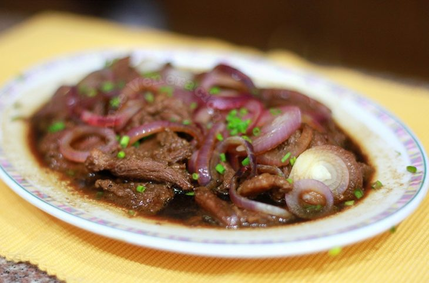

MAMA'S KITCHEN
Mechado |
Ingredients |
 |
1 pound beef - - chuck, round or brisket
100 grams pork fat (fatback)
1/2 cup soy sauce
1 piece lemon
1/2 teaspoon ground pepper
3 Tbsp oil
1 big potato
1 big carrot
2 cloves garlic
6 pieces shallots
1 cup tomato sauce
1 cup water
2 pieces bay leaves
1 medium red bell pepper
1 medium green bell pepper
1 cup green peas
fish sauce
|
Direction:
1. Using a small knife, cut through the center of the beef to make a hole. Insert a pork fat from one end and push until it comes out to the other end. Do the same with the rest of the meat.
2. Place larded meat on a bowl. Pour in soy sauce and juice from 1 lemon and add ground pepper. Mix until all meat are well coated. Cover and marinate for at least an hour.
3. In a pot, heat oil over medium heat. Fry the potatoes and carrots until edges are lightly browned. Remove the potatoes and carrots from the pot and set aside. Turn heat to high and add the marinated beef and sear all sides until browned. Reserve the soy marinade for later.
4. Turn heat to medium. Move the meat to the sides. Add the garlic and shallots and cook until limp.
5. Pour in the tomato sauce and the reserved soy sauce marinade. Let it simmer for a minute or two and then pour in water. Add bay leaves and bring again to a simmer. Turn heat to low and cover pot and stew until beef is tender (about 1 1/2 to 2 hours).
6. Add back the potatoes and carrots. Add the bell peppers and green peas and season with fish sauce as needed. Simmer until sauce is reduced and vegetables are cooked.
7. Cut the bigger chunks to a smaller size. Transfer to a serving bowl and enjoy with rice or bread.
Bistek |
Ingredients |
|  |
800 g rump beef steak
2 garlic clove chopped
2 red onion cut into rings
1/3 cup dark soy sauce
1/4 cup light soy sauce
2 tbs lemon juice
3 tsp sugar
5 tbs rice bran oil
1 chives *to decorate
|
Direction:
1. Thinly slice the steak to be 1/2cm thick then cut into 5-7cm wide pieces.
2. Combine dark soy sauce, light soy sauce, garlic, lemon juice and sugar in a bowl. Set aside.
3. Place beef in a non-metallic bowl. Add the soy sauce marinade and mix to combine. Cover with plastic wrap. Marinate for 15- 30 minutes.
4. Heat 3 tablespoons of oil in a large non-stick fry pan. Cook beef with the marinade on high heat for 8-10 minutes or until the meat is tender. Add the sugar and 1/3 cup of water, stirring occasionally until the sauce is reduced. Add remaining oil. Turn heat on low. Simmer and stir occasionally, until desired thickness is reached and the meat is tender. Add onion and cook for 1 minute. Turn off the heat and cover the pan. Onions should be just cooked and a bit crunchy
5. Garnish with chopped chives. Serve with cooked rice.